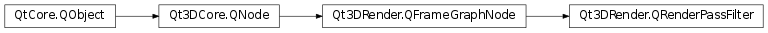

Qt3DRender.QRenderPassFilter¶
Synopsis¶
Functions¶
- def
addMatch(filterKey) - def
addParameter(parameter) - def
matchAny() - def
parameters() - def
removeMatch(filterKey) - def
removeParameter(parameter)
Detailed Description¶
Provides storage for vectors of Filter Keys and Parameters
A
Qt3DRender.QRenderPassFilterFrameGraph node is used to select whichQt3DRender.QRenderPassobjects are selected for drawing.QRenderPassFilterspecifies a list ofQt3DRender.QFilterKeyobjects andQt3DRender.QParameterobjects. WhenQRenderPassFilteris present in the FrameGraph, only theQRenderPassobjects, whoseQt3DRender.QFilterKeyobjects match the keys inQRenderPassFilterare selected for rendering. If noQRenderPassFilteris present, then allQRenderPassobjects are selected for rendering. The parameters in the list can be used to set values for shader parameters. The parameters inQRenderPassFilterare overridden by parameters inQTechniqueFilter,QTechniqueandQRenderPass.
-
class
PySide2.Qt3DRender.Qt3DRender.QRenderPassFilter([parent=nullptr])¶ Parameters: parent – PySide2.Qt3DCore.Qt3DCore::QNodeThe constructor creates an instance with the specified
parent.
-
PySide2.Qt3DRender.Qt3DRender.QRenderPassFilter.addMatch(filterKey)¶ Parameters: filterKey – PySide2.Qt3DRender.Qt3DRender::QFilterKeyAdd the
filterKeyto the match vector.
-
PySide2.Qt3DRender.Qt3DRender.QRenderPassFilter.addParameter(parameter)¶ Parameters: parameter – PySide2.Qt3DRender.Qt3DRender::QParameterAdd the given
parameterto the parameter vector.
-
PySide2.Qt3DRender.Qt3DRender.QRenderPassFilter.matchAny()¶ Return type: Returns a vector of the current keys for the filter.
-
PySide2.Qt3DRender.Qt3DRender.QRenderPassFilter.parameters()¶ Return type: Returns the current vector of parameters.
-
PySide2.Qt3DRender.Qt3DRender.QRenderPassFilter.removeMatch(filterKey)¶ Parameters: filterKey – PySide2.Qt3DRender.Qt3DRender::QFilterKeyRemove the
filterKeyfrom the match vector.
-
PySide2.Qt3DRender.Qt3DRender.QRenderPassFilter.removeParameter(parameter)¶ Parameters: parameter – PySide2.Qt3DRender.Qt3DRender::QParameterRemove the given
parameterfrom the parameter vector.
© 2018 The Qt Company Ltd. Documentation contributions included herein are the copyrights of their respective owners. The documentation provided herein is licensed under the terms of the GNU Free Documentation License version 1.3 as published by the Free Software Foundation. Qt and respective logos are trademarks of The Qt Company Ltd. in Finland and/or other countries worldwide. All other trademarks are property of their respective owners.